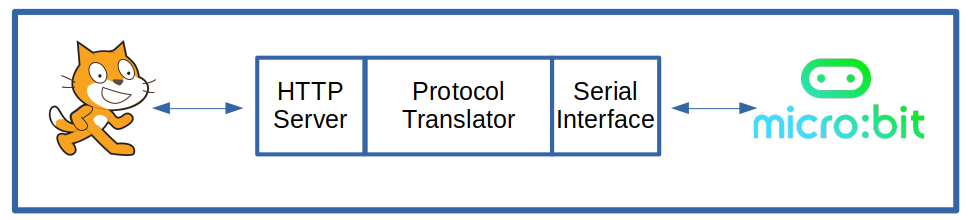

The s2m Architecture

s2m consists of 3 major components:
An HTTP Server
When a Scratch command block is executed, Scratch generates an HTTP message that is sent to the s2m HTTP server. The message identifies the block type and provides any data that the user may have entered into the block's fields. Reporting block information is formatted by s2m into HTTP messages and are sent to Scratch and made available to the user.
A copy of the Scratch 2.0 HTTP Extension specification is available here.
Protocol Translator
The micro:bit does not understand HTTP, so the Scratch HTTP messaging must be translated into data that the micro:bit can understand and process. When the micro:bit wants to send reporter data, such as button presses, it does so using the protocol described by the Python code that was installed on micro:bit that supports s2m. This protocl then needs to be translated into HTTP messages so that Scratch can process the data coming from the micro:bit.
The Serial Interface
s2m communicates with the micro:bit over its serial interface. The s2m serial interface writes data directly to the micro:bit and reads data from the micro:bit.